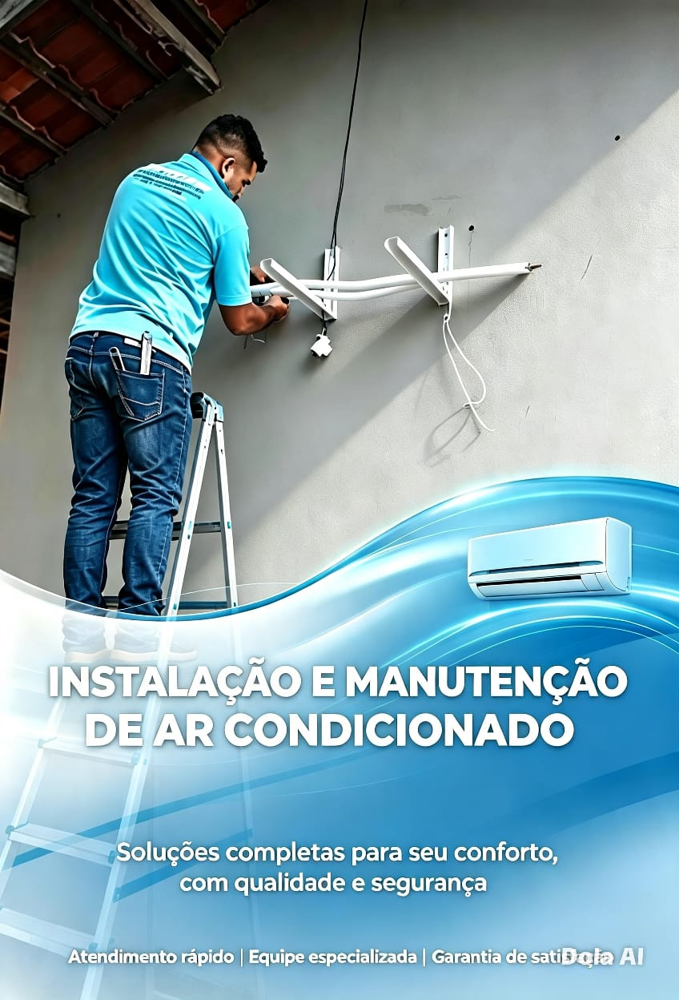

Éder Terlan • Conserto • Instalação • Manutenção
📍 Cerejeiras e Região — Rondônia

Instalação profissional com materiais de qualidade. Técnico certificado e registrado, autorizado por todas as principais marcas do mercado.
Reparo técnico especializado. Resolvemos vazamentos, barulhos, não liga, não gela e mais problemas. Diagnóstico preciso e transparente.
Limpeza completa, higienização, verificação de gás e componentes. Aumenta a vida útil do aparelho e garante ar mais saudável para sua família.
Atendimento para residências, comércios e empresas. Orçamento sem compromisso e horário agendado conforme sua conveniência.